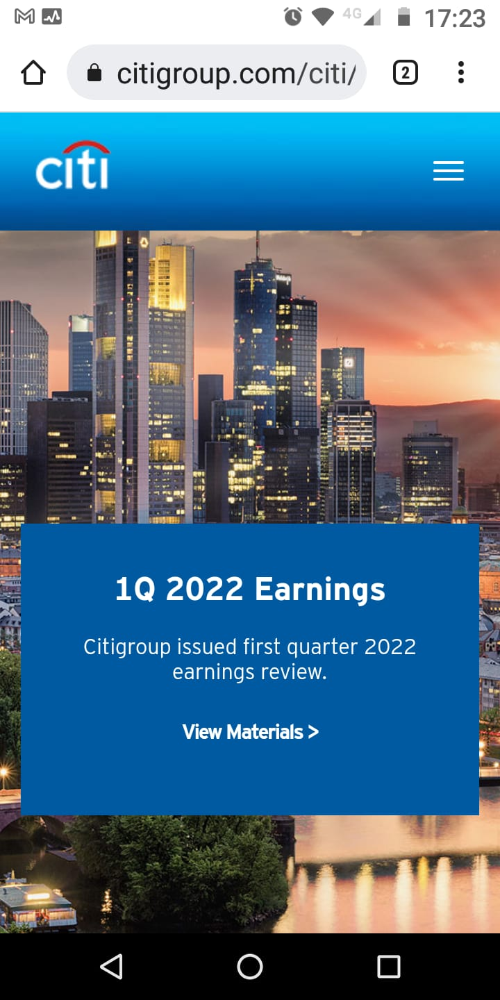
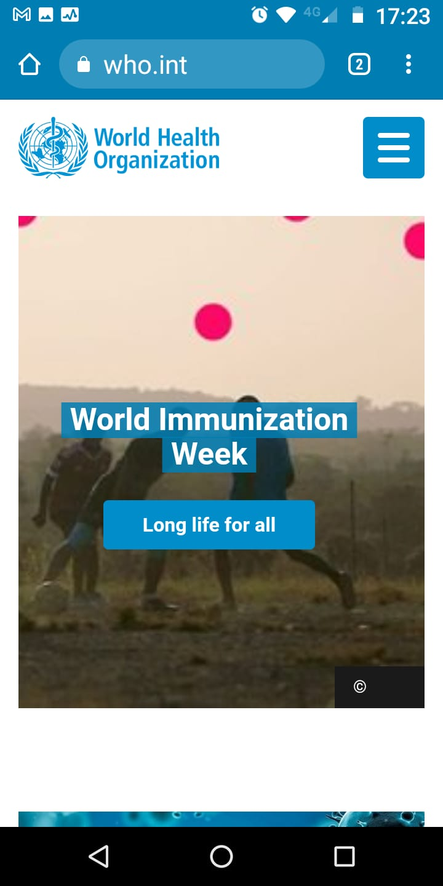
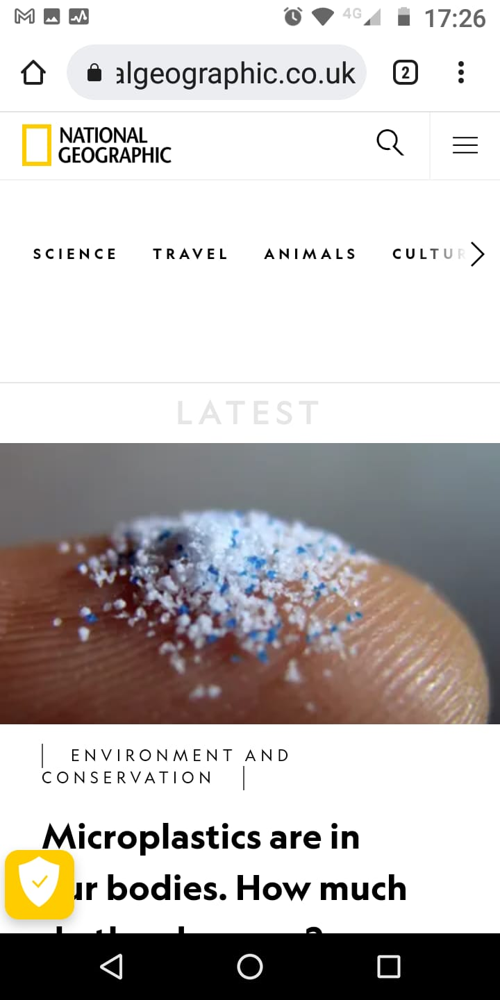

PARC: Repetition
Citi Group
citigroup.com
We can see the repetition principle on this page while the logotype appears at the top and footer of every single page. It's possible to identify that the corporative colors are blue and white by the recurrent use of them on the page. The font used for the entire site is Sans-Serif, and most of the texts come in black, white, blue, and grey based on each background and according to their visual identity.
PARC: Contrast
World Health Organization
who.int
The header and footer are strongly contrasted with a background that also remarks the content between them. Main ideas are contrasted with big fonts and solid background even when some of texts are positioning over images.
White Space and Clean Design
National Geographic
nationalgeographic.co.uk
We can see a clean inicial page, while the space between the logo, the menu options, and the content is not plenty of information or image saturation. There is an adecuate usage of margin with borders. The design team is not scare about white space that give a rest to the reader eyes.